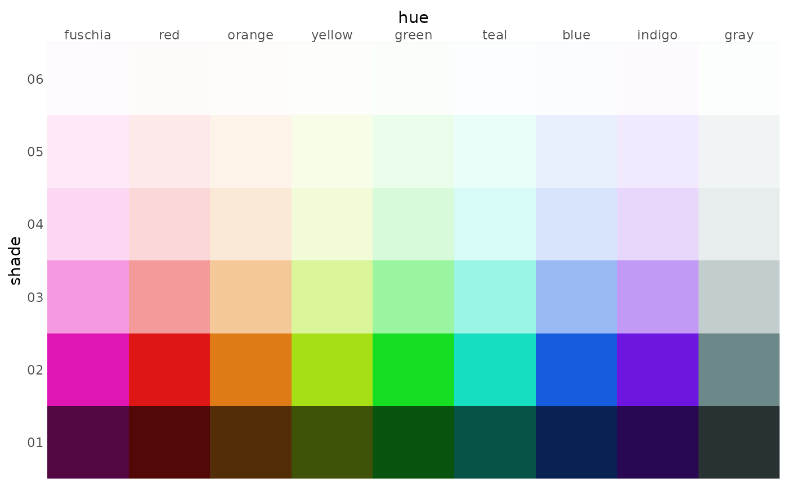
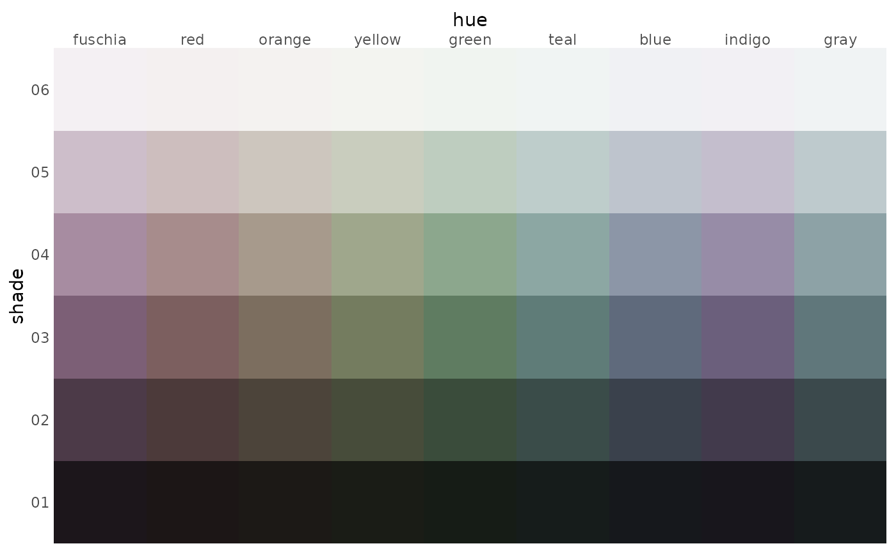

palx is based on the Palx javascript library, basically a port of its core functions using the colorspace package. Provided a base color, it pulls a set of hues from across the spectrum with the same lightness and saturation, plus a gray color. It then creates shades of those hues from nearly black to nearly white. You probably don't actually want every hue; it's just a good way to get a bunch of colors to choose from.
You can view a palette graphically by running plot(my_palx), or by setting plot = TRUE; the former returns a ggplot object that you can use again, while the latter just prints the plot once. This creates a grid of hue vs. shade tiles.
For generating a palette I need to extract different hues at different shades from, such as to make a small palette for a set of charts, I find getting a list (return_df = FALSE) is most versatile.
Usage
palx(
color,
n_hues = 8,
n_shades = 6,
row = NULL,
return_df = FALSE,
plot = FALSE,
labels = FALSE
)
# S3 method for class 'palx'
as_tibble(x, ...)
# S3 method for class 'palx'
plot(x, ..., labels = FALSE)Arguments
- color
A string of a color name (
"red") or hex code ("#6f54d6").' This should be a single value, as it's the color the palette will be based around, though it's not guaranteed that this exact color will be in the final palette.- n_hues
A number between 1 and 12. The number of hues returned will be this + 1, because a gray color will be added.
- n_shades
A number, for the number of shades to return for each hue. Defaults 6; too many more than that will probably become hard to distinguish.
- row
Numeric. If
NULL, the default, all rows (shades) are returned. Otherwise, only the rows with these indices are returned. Just a shortcut for subsetting the list.- return_df
Logical, whether to return a data frame (
return_df = TRUE) or a list of character vectors. DefaultsFALSE.- plot
Logical, whether to call
plot_palxbefore returning. This doesn't change what the function returns, it just prints out a ggplot chart and returns the colors as normal. DefaultsFALSE.- labels
Logical, whether to add labels on each tile giving colors' hex codes. Defaults
FALSE.- x
For
as_tibbleorplotmethods: The output of callingpalx, as either a list or data frame- ...
Not currently implemented
Value
If return_df = TRUE, a tibble with n_shades rows by one column per hue, plus a column giving the shade number. Otherwise, a named list (length n_shades) of character vectors, where each list item represents one shade. Both the tibble and named list are extended with the "palx" class, so that users can conveniently run plot(my_palx) or as_tibble(my_palx).
Details
Some notes about color:
Hue refers to what would commonly be the general name of a color, e.g. blue or yellow.
Shade refers to how light or dark a color is, e.g. light blue, dark blue.
Saturation refers to the strength of a color, or its distance from a neutral gray.
The color spectrum is broken up into even chunks, but there's a set of wavelengths that appear pretty similar–this shows up in the lime-green-teal-cyan-blue colors. That's just how human eyeballs work I guess.
These palettes shouldn't be used for sequential palettes, even pulling multiple shades from one hue. Good sequential palettes are corrected for perceptual differences in shade, whereas this just takes even steps. Also please don't use rainbow scales for sequential data.
You likely only want one or two shades worth of colors (use the row arguments), either adjacent for colors that appear "even", or one light and one dark for a paired palette. Saturated colors that aren't too dark or too light work best.
Examples
palette <- palx("#9CCC0C") # returns a list
palx("#9CCC0C", return_df = TRUE) # returns a data frame
#> # A tibble: 6 × 10
#> shade fuschia red orange yellow green teal blue indigo gray
#> <dbl> <chr> <chr> <chr> <chr> <chr> <chr> <chr> <chr> <chr>
#> 1 1 #290221 #290202 #291602 #1E2902 #022905 #022923 #021029 #130229 #171813
#> 2 2 #6E0658 #6E0606 #6E3A06 #506E06 #066E0E #066E60 #062C6E #33066E #3E4233
#> 3 3 #B40B8F #B40B0B #B45F0B #83B40B #0BB417 #0BB49C #0B47B4 #530BB4 #656B54
#> 4 4 #F226C7 #F22626 #F28C26 #B8F226 #26F235 #26F2D6 #2670F2 #7D26F2 #949B7F
#> 5 5 #F885DF #F88585 #F8BE85 #D7F885 #85F88D #85F8E8 #85AEF8 #B685F8 #C2C7B7
#> 6 6 #FDE3F8 #FDE3E3 #FDF0E3 #F6FDE3 #E3FDE5 #E3FDFA #E3EDFD #EEE3FD #F1F2EF
# convert `palette` to a tibble
tibble::as_tibble(palette)
#> # A tibble: 6 × 10
#> shade fuschia red orange yellow green teal blue indigo gray
#> <dbl> <chr> <chr> <chr> <chr> <chr> <chr> <chr> <chr> <chr>
#> 1 1 #290221 #290202 #291602 #1E2902 #022905 #022923 #021029 #130229 #171813
#> 2 2 #6E0658 #6E0606 #6E3A06 #506E06 #066E0E #066E60 #062C6E #33066E #3E4233
#> 3 3 #B40B8F #B40B0B #B45F0B #83B40B #0BB417 #0BB49C #0B47B4 #530BB4 #656B54
#> 4 4 #F226C7 #F22626 #F28C26 #B8F226 #26F235 #26F2D6 #2670F2 #7D26F2 #949B7F
#> 5 5 #F885DF #F88585 #F8BE85 #D7F885 #85F88D #85F8E8 #85AEF8 #B685F8 #C2C7B7
#> 6 6 #FDE3F8 #FDE3E3 #FDF0E3 #F6FDE3 #E3FDE5 #E3FDFA #E3EDFD #EEE3FD #F1F2EF
# should yield a tibble with the additional class `palx`
class(tibble::as_tibble(palette))
#> [1] "palx" "tbl_df" "tbl" "data.frame"
# plot `palette` using ggplot
plot(palette)
# bad examples all with one hue that return weird / not very useful palettes
too_light <- palx("#ccf4fa", plot = TRUE) # saturated but too light

low_sat <- palx("#6c888d", plot = TRUE) # not too light, but not saturated enough

good <- palx("#0e91a7", plot = TRUE) # much better--high saturation, middle lightness